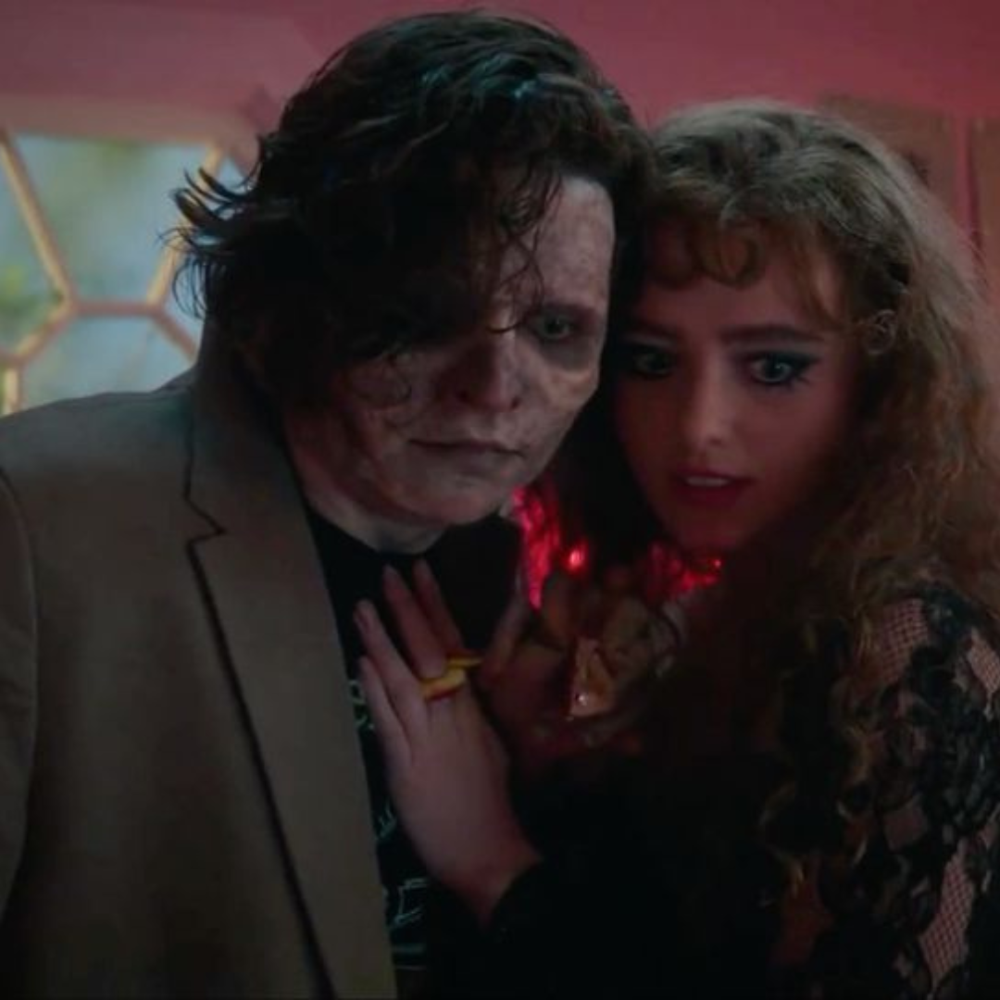
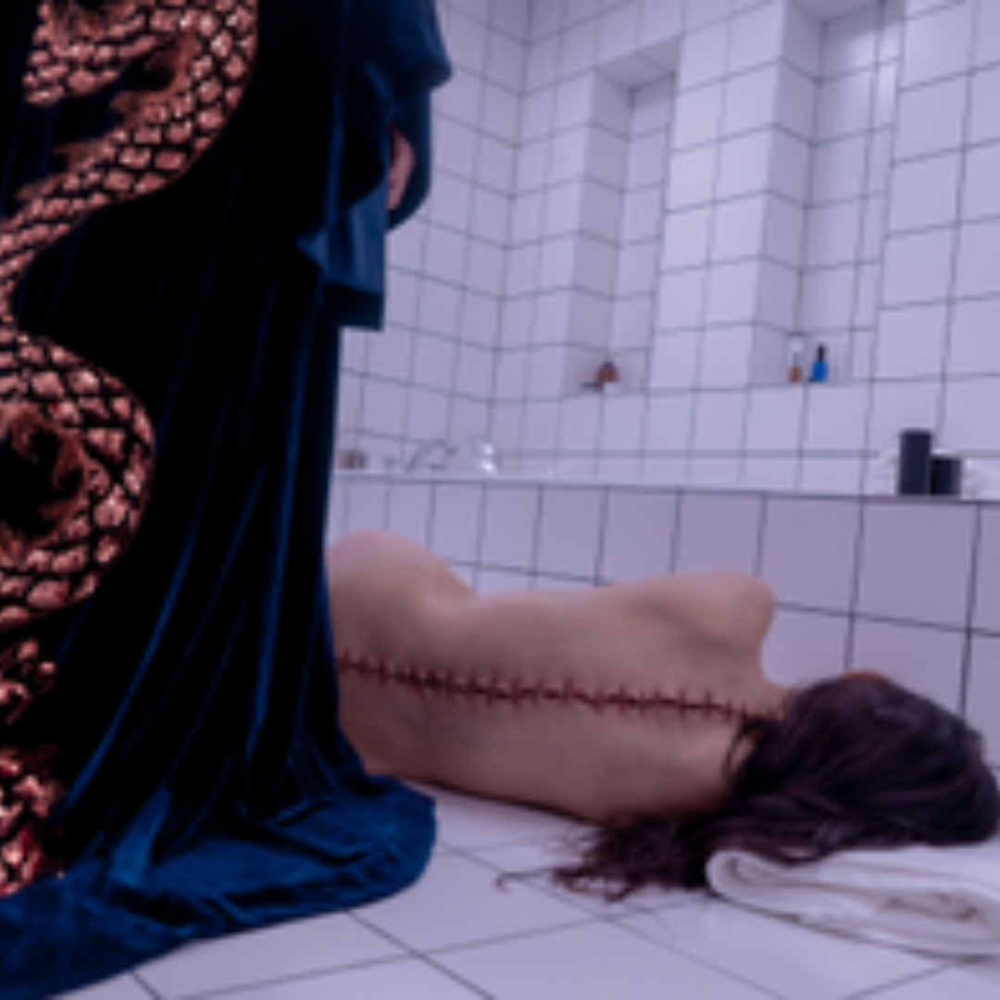
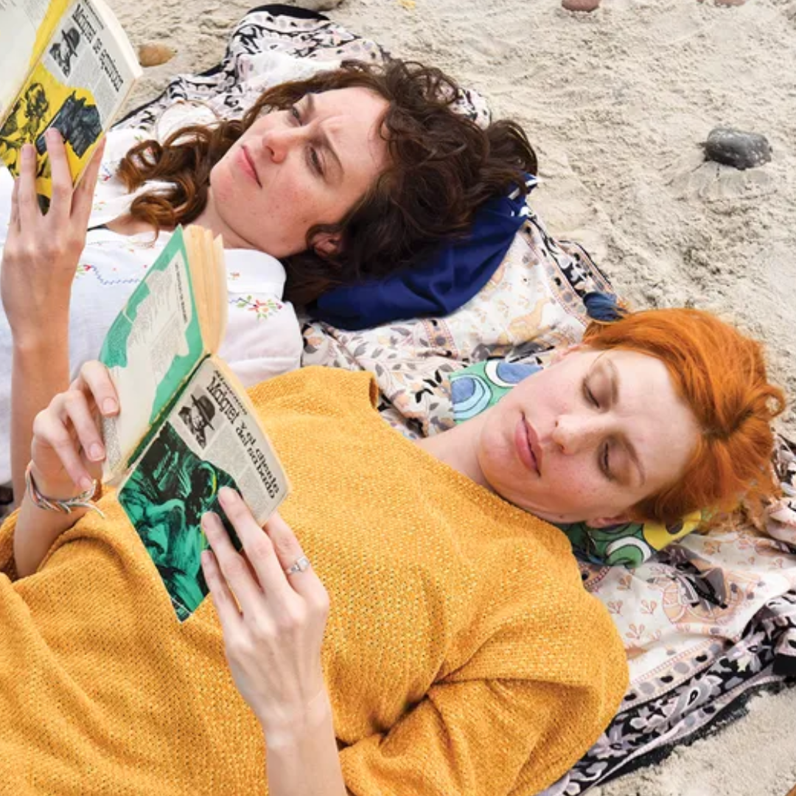
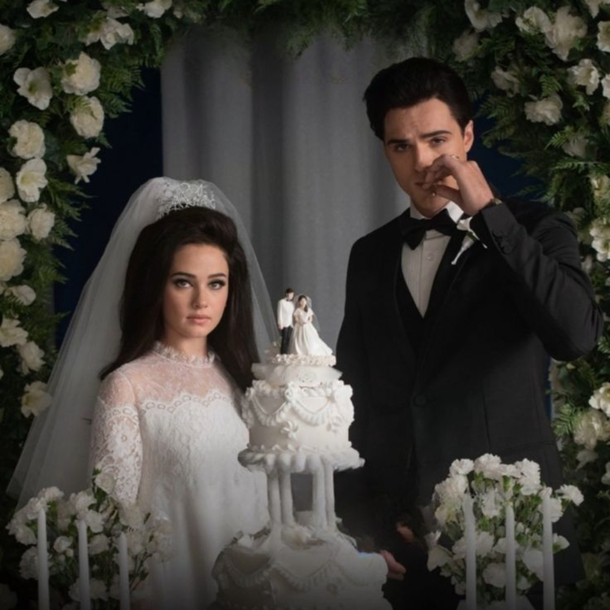

Lisa Frankenstein
La nueva futura pelicula de culto

The Substance
Una morbosa critica al patriarcado

Agarrame Fuerte
Una oda a la amistad como reflejo de duelo
Raw
(Ciclo de Halloween)
El canibalismo como nueva fase de horror

The Watchers
La nueva version del Panoptico

Priscilla
La fama como la carcel de las familias
The Love Witch
(Ciclo de Halloween)
El technicolor moderno